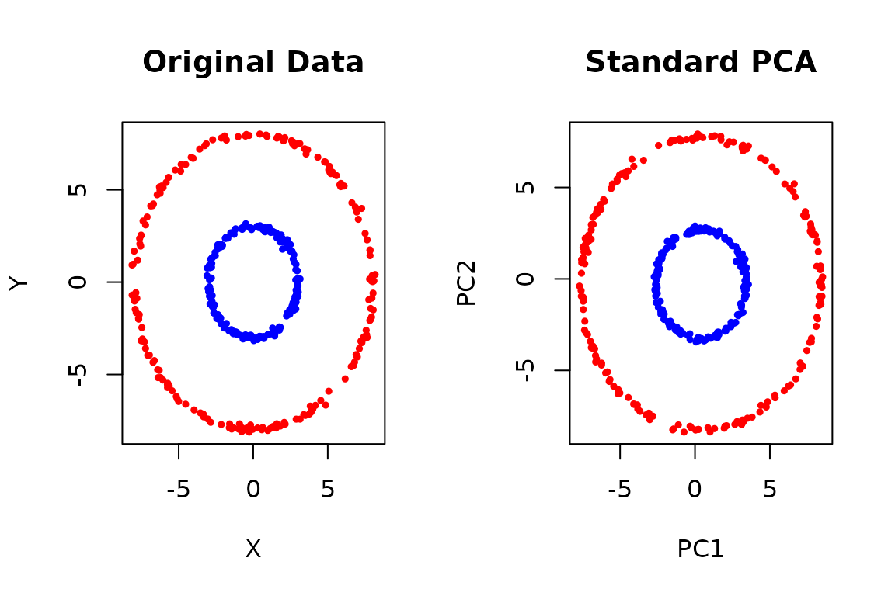
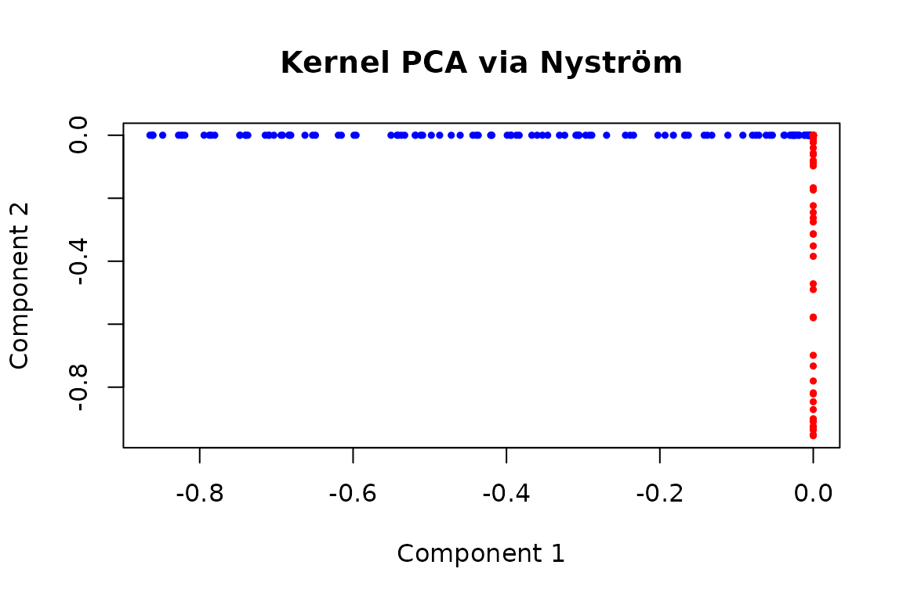

Kernel PCA Made Fast: The Nyström Approximation
Nystrom.RmdWhy Kernel PCA?
Standard PCA finds linear patterns in your data. But what if your data has non-linear structure? Consider these two concentric circles:
set.seed(42)
# Create two concentric circles
n <- 200
theta <- runif(n, 0, 2*pi)
inner <- cbind(3*cos(theta), 3*sin(theta)) + rnorm(2*n, sd=0.1)
outer <- cbind(8*cos(theta), 8*sin(theta)) + rnorm(2*n, sd=0.1)
X_circles <- rbind(inner, outer)
colors <- c(rep("blue", n), rep("red", n))
par(mfrow = c(1, 2))
# Original data
plot(X_circles, col = colors, pch = 19, cex = 0.5,
main = "Original Data", xlab = "X", ylab = "Y")
# Standard PCA fails
pca_result <- pca(X_circles, ncomp = 2)
plot(pca_result$s, col = colors, pch = 19, cex = 0.5,
main = "Standard PCA", xlab = "PC1", ylab = "PC2")
Standard PCA can’t separate these circles because they’re not linearly separable. Kernel PCA solves this by implicitly mapping the data to a higher-dimensional space where linear separation becomes possible.
The Challenge: Computational Cost
Kernel PCA requires computing a kernel matrix K where K[i,j] = k(x_i, x_j) for some kernel function k. For N samples: - Memory: O(N²) to store K - Time: O(N³) for eigendecomposition
This becomes prohibitive for large datasets (N > 10,000).
The Solution: Nyström Approximation
The Nyström method approximates the full kernel matrix using only a small subset of “landmark” points:
- Select m << N landmark points
- Compute kernel values only between:
- Landmarks vs landmarks (m × m matrix)
- All points vs landmarks (N × m matrix)
- Use these to approximate the full eigendecomposition
This reduces complexity from O(N³) to O(Nm²), a huge speedup when m is small!
Quick Start Example
Let’s apply kernel PCA to our circles using the Nyström approximation:
# Define a simple RBF (Gaussian) kernel
rbf_kernel <- function(X, Y = NULL, sigma = 1) {
if (is.null(Y)) Y <- X
# Compute squared distances efficiently
sumX2 <- rowSums(X^2)
sumY2 <- rowSums(Y^2)
sqdist <- outer(sumX2, sumY2, `+`) - 2 * tcrossprod(X, Y)
sqdist[sqdist < 0] <- 0 # Fix numerical issues
exp(-sqdist / (2*sigma^2))
}
# Apply Nyström approximation
ny_result <- nystrom_approx(
X_circles,
kernel_func = rbf_kernel,
ncomp = 2, # Number of components
nlandmarks = 50 # Only 50 landmarks for 400 points!
)
# Plot the results
plot(ny_result$s, col = colors, pch = 19, cex = 0.5,
main = "Kernel PCA via Nyström",
xlab = "Component 1", ylab = "Component 2")
Success! The Nyström approximation separated the circles using only 50 landmark points instead of all 400.
Using nystrom_approx()
The nystrom_approx() function returns a standard
bi_projector object:
# Check what we got
print(ny_result)
#> A bi_projector object with the following properties:
#>
#> Dimensions of the weights (v) matrix:
#> Rows: 400 Columns: 2
#>
#> Dimensions of the scores (s) matrix:
#> Rows: 400 Columns: 2
#>
#> Length of the standard deviations (sdev) vector:
#> Length: 2
#>
#> Preprocessing information:
#> A finalized pre-processing pipeline:
#> Step 1 : pass
# Project new data
new_points <- rbind(
c(4, 0), # Should be inner circle
c(0, 8), # Should be outer circle
c(5.5, 5.5) # Between circles
)
new_scores <- project(ny_result, new_points)
print(new_scores)
#> [,1] [,2]
#> [1,] -9.720225e-02 5.752583e-06
#> [2,] -3.821218e-10 3.006193e-13
#> [3,] -2.294905e-09 3.194746e-13Advanced Options
1. Automatic Kernel Parameter Selection
The kernel bandwidth (sigma) greatly affects results. Here’s a kernel with automatic parameter selection:
# RBF kernel with median heuristic for sigma
auto_rbf_kernel <- function(X, Y = NULL, sigma = NULL) {
if (is.null(Y)) Y <- X
if (is.null(sigma)) {
# Use median distance heuristic on a sample
n_sample <- min(nrow(X), 100)
idx <- sample(nrow(X), n_sample)
dists <- as.vector(dist(X[idx, ]))
sigma <- median(dists[dists > 0]) / sqrt(2)
message("Auto-selected sigma = ", round(sigma, 3))
}
sumX2 <- rowSums(X^2)
sumY2 <- rowSums(Y^2)
sqdist <- outer(sumX2, sumY2, `+`) - 2 * tcrossprod(X, Y)
sqdist[sqdist < 0] <- 0
exp(-sqdist / (2*sigma^2))
}
# Use it
ny_auto <- nystrom_approx(X_circles, kernel_func = auto_rbf_kernel,
ncomp = 2, nlandmarks = 50)
#> Auto-selected sigma = 5.927
#> Auto-selected sigma = 5.2762. Double Nyström for Extra Speed
For very large datasets, “Double Nyström” applies the approximation twice:
# Create a larger dataset
set.seed(123)
n_large <- 2000
theta_large <- runif(n_large, 0, 2*pi)
radius_large <- sample(c(3, 8), n_large, replace = TRUE)
X_large <- cbind(radius_large*cos(theta_large),
radius_large*sin(theta_large)) + rnorm(2*n_large, sd=0.1)
# Standard Nyström
system.time(
ny_standard <- nystrom_approx(X_large, kernel_func = auto_rbf_kernel,
ncomp = 5, nlandmarks = 200,
method = "standard")
)
#> Auto-selected sigma = 5.45
#> Auto-selected sigma = 5.381
#> user system elapsed
#> 0.030 0.026 0.019
# Double Nyström (faster for same number of landmarks)
system.time(
ny_double <- nystrom_approx(X_large, kernel_func = auto_rbf_kernel,
ncomp = 5, nlandmarks = 200,
method = "double", l = 50)
)
#> Auto-selected sigma = 4.916
#> Auto-selected sigma = 4.851
#> Auto-selected sigma = 5.4
#> user system elapsed
#> 0.045 0.100 0.0423. Preprocessing Integration
You can combine kernel PCA with preprocessing:
# Center and scale before kernel PCA
ny_preprocessed <- nystrom_approx(
X_circles,
kernel_func = rbf_kernel,
ncomp = 2,
nlandmarks = 50,
preproc = colscale(center(), type = "z") # Preprocessing pipeline: center then scale
)Choosing Parameters
Common Kernels
# Linear kernel (equivalent to standard PCA)
linear_kernel <- function(X, Y = NULL) {
if (is.null(Y)) tcrossprod(X) else tcrossprod(X, Y)
}
# Polynomial kernel
poly_kernel <- function(X, Y = NULL, degree = 3, coef = 1) {
if (is.null(Y)) Y <- X
(tcrossprod(X, Y) + coef)^degree
}
# Sigmoid kernel
sigmoid_kernel <- function(X, Y = NULL, alpha = 1, coef = 0) {
if (is.null(Y)) Y <- X
tanh(alpha * tcrossprod(X, Y) + coef)
}When to Use Nyström Approximation
✓ Use when: - Your dataset has > 5,000 samples - You need non-linear dimensionality reduction - Full kernel PCA is too slow/memory-intensive - Approximate solutions are acceptable
✗ Don’t use when: - You have < 1,000 samples (use full kernel PCA) - You need exact results - Linear PCA suffices for your problem
Technical Details
Click for mathematical details
The Nyström approximation uses the fact that a positive semi-definite kernel matrix K can be approximated as:
where: - is the m × m kernel matrix between landmarks - is the N × m kernel matrix between all points and landmarks
The eigendecomposition of this approximation can be computed efficiently: 1. Compute eigendecomposition of 2. Approximate eigenvectors of K as:
Double Nyström applies this approximation recursively within the landmark computation, reducing complexity from O(Nm² + m³) to O(Nml + l³) where l << m.
See Also
-
pca()for standard linear PCA -
compose_partial_projector()to chain kernel PCA with other methods - The original papers:
- Williams & Seeger (2001) for standard Nyström
- Lim et al. (2015) for Double Nyström